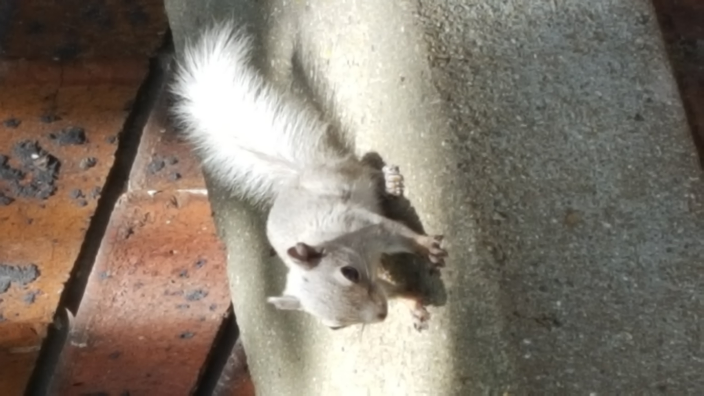
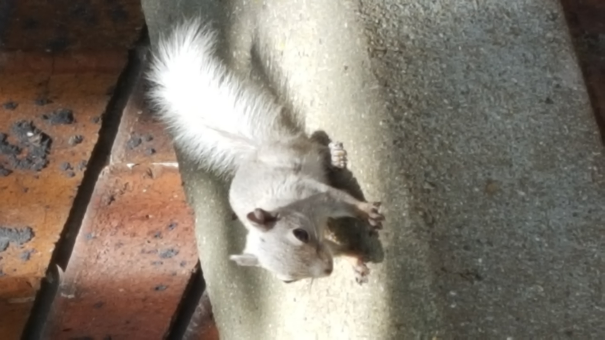
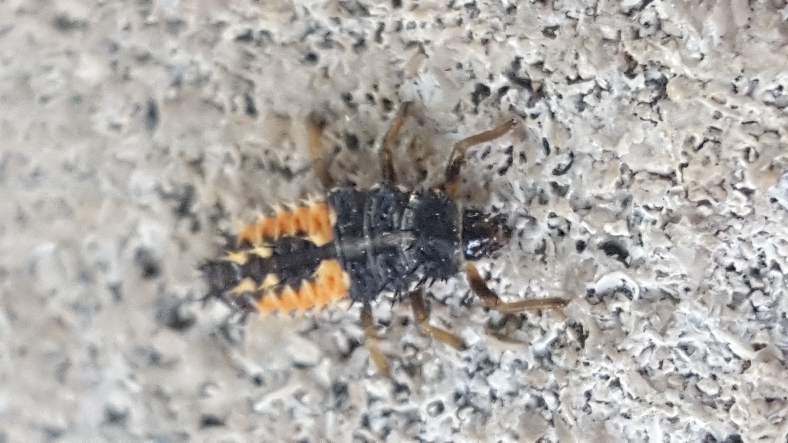
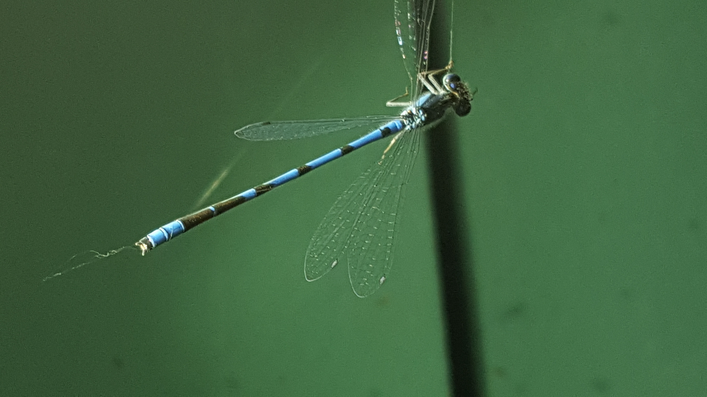

Note: You may prefer to see my profile on this other useful website, which has both more detail and more pictures of me, but you'll need to sign up for that to see the whole thing.
Hi! I'm Harry Altman, aka Sniffnoy. You might have encountered me on the internet before. I do math, and in particular I can talk your ear off about the problem of writing numbers with ones, addition, and multiplication! And lots of variants of the problem. I won't do that here though, I'll save that for later. :D
Also I like infinities. I've also been working a bunch on doing silly things with infinities. This is actually much easier, but unfortunately it's way harder to explain to people! Again, best saved for another time. :) Also various other math things, like some neat Fibonacci things recently, but, uh, this isn't supposed to be a research statement, so I'll move on to a different topic. :P
I don't actually have an academic position anywhere, so this past 5 years I've worked a programming job to support my math habit. :) I was writing an Ethereum smart contract debugger, if you're interested; but that's come to a close now so now I have a lot more time to get other things done again!
OK so the thing is... like, I guess this is a place to describe oneself, but I'm kind of averse to doing that? I guess a big thing there is that I worry about verbal overshadowing and also creating fixity, that by describing myself I will thereby cause myself to identify with those descriptions, which is something I want to avoid.
So, well, I guess I will try to say only things that are quite definitely true, or to show rather than telling!
 

I guess, I like things that are a bit off from what people expect. Sometimes, as in my mathematical work, these things are quite natural -- but nature doesn't always meet your expectations! Or (to take a page from Yudkowsky's book), I should say that people's expectations don't always meet nature. 😁 Sometimes nice questions have nasty answers, and I like to disgust people with them. :D And sometimes nasty-seeming constructions have nice results, and I like to amaze people with them!
But I'm interested in the artificial as well as the natural; a thing I find really fascinating is, like, bizarrely complicated conventions and understanding where they come from and all the weird cases they generate. Things like text encoding (particularly Unicode) and data encoding in computers; unusual calendars (it's fun to explain the Hebrew calendar to people 😁); and other such things. I am trying to more often say "huh, that's a strange word, I wonder where it comes from?" and look up its etymology. So many things that appear to not make sense, the reason is, it used to make sense, but then it wasn't updated when circumstances changed! And I really like learning about the history of how that occurred.
I also like taking pictures of the local wildlife, which mostly means bugs and birds. :) Here in New York mostly birds, I don't see a lot of good bugs here. Although there are rats! :D Of course, rats don't like light or people, which makes photographing them tricky, but it can be done! Back in Ann Arbor I'd see a lot more good bugs.
 Uh, what are other good stories for illustrating myself? Um, here's one that comes to mind. Once, I was visiting my friends Colin and Aviva out in Chicago, and we were in the car, along with their dog, Gately. (Gately has since died, unfortunately.) I was in the back seat, and Gately was in the center of the car. And I thought, you know, dogs are always sniffing each other's butts. Gately's butt is right there; I could totally sniff it. So uh I tried sniffing Gately's butt. It stunk! Not that much though. I don't think I really learned anything from doing this. :P
(Perhaps my favorite thing that anyone has ever said about me: "Harry, you are very good at making arguments, but you are not good at not doing annoying things with the cat toy." 😁)